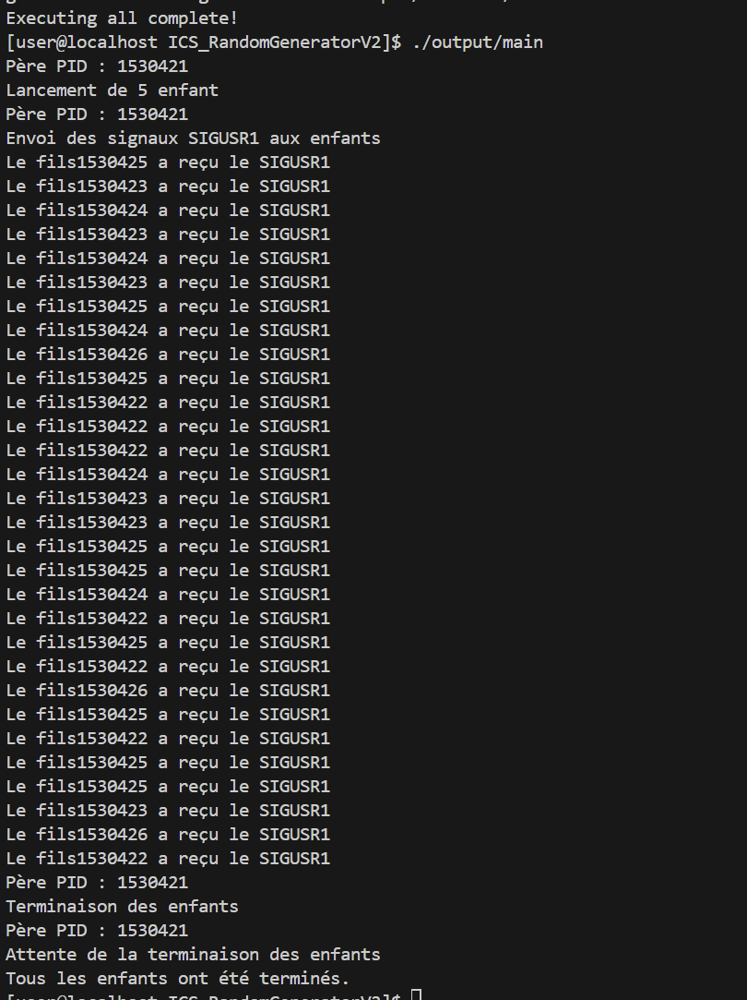
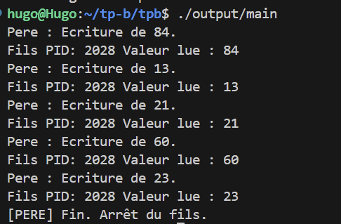

2.3 Signaux
2.3a )La fonction sigaction permet de définir un handler pour un signal. En respectant les points particuliers mis en exergue dans les paragraphes précédents vous devez : Écrire un programme qui se « forke » en 5 enfants. / Toutes les secondes sur une durée de 30 secondes, le processus père doit envoyer un signal SIGUSR1 a l’un des enfants. / Le processus recevant le signal SIGUSR1 doit afficher le message « Hello from PID », PID étant le pid du processus enfant. / Une fois les 30 secondes écoulées, le processus parent doit envoyer un signal SIGINT aux 5 processus enfants (Attention aux processus Zombie)
Ce code repond à tous les critère demandé par l'énoncé. Le résultat plus bas :
#include <stdio.h>
#include <stdlib.h>
#include <unistd.h> // Pour fork(), getpid(), sleep(), pause()
#include <signal.h> // Pour sigaction(), kill(), sigemptyset()
#include <sys/wait.h> // Pour wait()
#include <time.h> // Pour time() et srand()
#define NUM_CHILDREN 5 // On définit le nombre de fils a 5 comme le dit l'énoncé
//FLAG Gestionaire de signal
//volatile signifie que la variable peut être modifiés par des signaux
// sig_atomic_t est un type entier garanti d'etre modifié atomiquement
volatile sig_atomic_t sigusr1_received = 0; // Variable pour indiquer la réception du signal
// Gestionaire de signal pour SIGUSR1
void handle_sigusr1(int sig) {
(void)sig; // Correction : Pour enlever le warning "unused parameter"
sigusr1_received = 1; // On met a jour la variable pour indiquer la réception du signal
}
// Fonction pour le processus fils
void child_logic(void){
//configuration du gest de signal avec sigaction()
struct sigaction sa; // Correction : La variable est renommée "sa"
sa.sa_handler = handle_sigusr1; // On assigne le gestionnaire de signal
sigemptyset(&sa.sa_mask); // On initialise le masque de signal a vide
sa.sa_flags = 0; // Pas de drapeaux spéciaux
//on lie le gestionnaire de signal SIGUSR1
// Correction : On appelle la FONCTION sigaction() avec la VARIABLE sa
if (sigaction(SIGUSR1, &sa, NULL) == -1) {
perror("sigaction");
exit(1);
}
//Le signal SIGINT gardera son comportement par défaut : terminer le processus
//maintenant la boucle principale du fils :
while (1) {
pause(); //met en pause le processus jusqu'à la réception d'un signal
//on va vérifié si c'est SIGUSR1 qui a été reçu
if (sigusr1_received) {
sigusr1_received = 0; // on réinitialise la variable
printf("Le fils%d a reçu le SIGUSR1\n", getpid());
}
}
//le fils ne sortira jamais de cette boucle
//il est prévu qu'il soit tué par le père
}
void parent_logic(pid_t child_pids[]){
//on initilise le générateur de nombre aléatoire
srand(time(NULL));
printf("Père PID : %d\n", getpid());
printf("Lancement de %d enfant \n", NUM_CHILDREN);
//on sleep 1 seconde pour laisser le temps aux fils de s'initialiser
sleep(1);
printf("Père PID : %d\n", getpid());
printf("Envoi des signaux SIGUSR1 aux enfants\n");
//on entre dans un boucle de 30 secondes on envoie des signaux SIGUSR1 aux fils
for (int i = 0; i < 30; i++) {
//on choisit un fils au hasard
int random_index = rand() % NUM_CHILDREN;
pid_t child_pid = child_pids[random_index];
// Envoie le signal SIGUSR1 à l'enfant ciblé
kill(child_pid, SIGUSR1);
//on attend 1 seconde avant d'envoyer le prochain signal
sleep(1);
}
//Après 30 secondes on termine les fils
printf("Père PID : %d\n", getpid());
printf("Terminaison des enfants\n");
for (int i = 0; i < NUM_CHILDREN ; i++) {
kill(child_pids[i], SIGINT); //on envoie le signal SIGINT pour terminer les fils
}
//maitenant on va éviter les processus zombies
printf("Père PID : %d\n", getpid());
printf("Attente de la terminaison des enfants\n");
for (int i = 0; i < NUM_CHILDREN ; i++) {
int status;
wait(&status); //on attend la terminaison de chaque fils
}
printf("Tous les enfants ont été terminés.\n");
}
int main(void){
pid_t child_pids[NUM_CHILDREN];
for (int i = 0; i < NUM_CHILDREN; i++) {
pid_t pid = fork();
if (pid < 0){
perror("fork");
exit(1);
}
if (pid == 0 ){
child_logic();
exit(0); //le fils termine son exécution ici
}else {
child_pids[i] = pid; //le père stocke le PID du fils
}
}
parent_logic(child_pids);
return 0;
}

Le père annonce son PID et lance les 5 enfants.
Gestion des signaux (SIGUSR1) : On voit les messages "Le fils... a reçu le SIGUSR1". Il y a bien 30 messages, un par seconde.
Caractère aléatoire : La suite de fils prouve que votre rand() % NUM_CHILDREN fonctionne bien.
Terminaison propre (SIGINT) : Après les 30 signaux, le père annonce la "Terminaison des enfants".
Gestion des Zombies (wait) : Le père annonce "Attente de la terminaison" et "Tous les enfants ont été terminés."
2.3b)Il existe une fonction signal qui permet de faire presque la même chose que sigaction. Pourtant son utilisation est fortement déconseillée. Pourquoi ?
Oui, il existe la fonction signal() qui a plusieurs defauts :
- l'absence de masque pour les signaux : alors que sigaction permet de spécifier en sa_mask, signal() lui n'offre pas ce contre. Le sa_mask permet de bloquer automatiquement un ensemble de signaux.
- signal ne permet pas de spécifier des FLAGS permettant de d'interrompre , start des appels.
3. Mémoire Partagée
3.A) En vous basant le fichier TD5-shared_memory.c et en réutilisant le code du TD sur les processus (ou celui de l’exercice précédent) vous devez :
Ecrire un programme qui se « forke » (un seul processus fils)
Le processus parent devra afficher un nombre aléatoire compris entre 0 et 100 et l’écrire dans la mémoire partagée.
Après-quoi le processus parent devra envoyer un signal SIGUSR1 au processus fils pour lui signaler que des données sont disponibles dans la mémoire partagée.
Le processus fils devra lire les données disponibles et afficher son pid en même temps que les données lues.
Après l’envoi de 5 valeurs aléatoires au processus fils, le processus parent mettra fin au processus fils, et se terminera.
#include <stdio.h>
#include <stdlib.h>
#include <unistd.h>
#include <signal.h>
#include <sys/shm.h>
#include <sys/wait.h>
#include <time.h>
volatile sig_atomic_t data_ready = 0;
void handler_child(int sig) {
data_ready = 1;
}
int main() {
int shmid;
int *shared_mem;
pid_t pid;
//création segment de mémoire partagée
shmid = shmget(IPC_PRIVATE, sizeof(int), IPC_CREAT | 0666);
if (shmid < 0) { perror("shmget"); exit(1); }
// attache au segment
shared_mem = (int *)shmat(shmid, NULL, 0);
if (shared_mem == (int *)-1) { perror("shmat"); exit(1); }
// Fork
pid = fork();
if (pid == 0) {
// FILS :
struct sigaction sa;
sa.sa_handler = handler_child;
sigemptyset(&sa.sa_mask);
sa.sa_flags = 0;
sigaction(SIGUSR1, &sa, NULL);
while(1) {
while(!data_ready) {
pause(); // wait le signal du père
}
data_ready = 0; // reset le flag
printf("[FILS PID %d] Valeur lue : %d\n", getpid(), *shared_mem);
}
} else {
// PERE :
srand(time(NULL));
for (int i = 0; i < 5; i++) {
int val = rand() % 101; // 0 à 100
*shared_mem = val;
printf("[PERE] Ecriture de %d. Notification du fils.\n", val);
kill(pid, SIGUSR1); // signal SIGUSR1
sleep(1);
}
// KILL FILS
printf("[PERE] Fin. Arrêt du fils.\n");
kill(pid, SIGKILL);
wait(NULL);
shmdt(shared_mem);
shmctl(shmid, IPC_RMID, NULL);
}
return 0;
}

4. Mémoire mappée
4.a ) Pour mettre en correspondance un fichier ordinaire avec la mémoire d’un processus, utilisez l’appel mmap. Cette fonction accepte 6 paramètres. Donnez le rôle de chacun des paramètres avec les valeurs possibles
addr : addresse mémoire pour le mapping length : longueur de la zone mapper prot : pour protéger la mémoire flags : type de mapping fd : description de fichier offset : décalage dans le fichier où comment le mapping
4.b) Que signifie la ligne « PROT_READ | PROT_WRITE » dans le fichier reader.c
Cette ligne demande l'autorisation de lire et d'écrire dans la zone mémoire mappé.
4.c)A quoi sert le drapeau MAP_SHARED ?
Il sert a indiquer que les modifications sont apportées à la mémoire. Visible par les autres processus qui ont mappé le même fichier.
4.d) Utilisez les fichiers reader.c et writer.c pour écrire deux programmes. Le premier programme écrira sous forme binaire le contenu d’un tableau d’entiers de 5 valeurs aléatoires dans la mémoire mappée. Le second programme devra lire ces valeurs depuis la mémoire mappée, et les afficher
#include <stdlib.h>
#include <stdio.h>
#include <fcntl.h>
#include <sys/mman.h>
#include <sys/stat.h>
#include <time.h>
#include <unistd.h>
#define NUM_VALUES 5
#define FILE_LENGTH (NUM_VALUES * sizeof(int))
int random_range(unsigned const low, unsigned const high) {
unsigned const range = high - low + 1;
return low + (int) (((double) range) * rand() / (RAND_MAX + 1.0));
}
int main(int argc, char *argv[]) {
if (argc < 2) return 1;
srand(time(NULL));
// dimensionnement du fichier
int fd = open(argv[1], O_RDWR | O_CREAT, S_IRUSR | S_IWUSR);
ftruncate(fd, FILE_LENGTH);
// mapping de la mémoire
void *file_mem = mmap(0, FILE_LENGTH, PROT_WRITE, MAP_SHARED, fd, 0);
close(fd);
if (file_mem == MAP_FAILED) return 1;
// Cast vers int* et écriture binaire
int *array = (int*) file_mem;
for (int i = 0; i < NUM_VALUES; i++) {
array[i] = random_range(-100, 100);
printf("Écrit : %d\n", array[i]);
}
munmap(file_mem, FILE_LENGTH);
return 0;
}
#include <stdlib.h>
#include <stdio.h>
#include <fcntl.h>
#include <sys/mman.h>
#include <sys/stat.h>
#include <unistd.h>
#define NUM_VALUES 5
#define FILE_LENGTH (NUM_VALUES * sizeof(int))
int main(int argc, char *argv[]) {
if (argc < 2) return 1;
int fd = open(argv[1], O_RDWR, S_IRUSR | S_IWUSR);
if (fd == -1) return 1;
// Mapping mémoire
void *file_mem = mmap(0, FILE_LENGTH, PROT_READ | PROT_WRITE, MAP_SHARED, fd, 0);
close(fd);
if (file_mem == MAP_FAILED) return 1;
// Cast vers int* et lecture binaire
int *array = (int*) file_mem;
for (int i = 0; i < NUM_VALUES; i++) {
printf("Lu : %d\n", array[i]);
}
munmap(file_mem, FILE_LENGTH);
return 0;
}